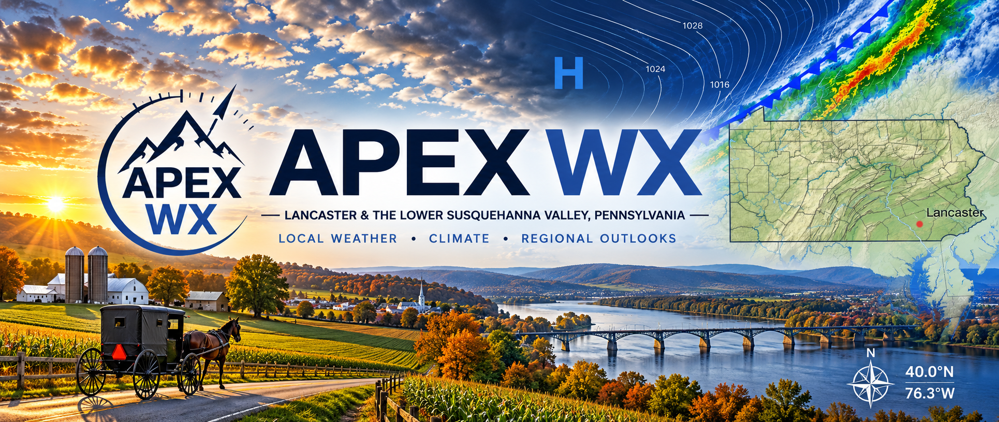

Fawkes House & Lower Susquehanna Valley
Weather Information


Weather information for Lancaster since 2017
Member APRSWXNET/CWOP Program
What is UTC Time? (click for more)

View of downtown Lancaster, including the Griest Building, Lancaster Marriott, and Cargas building.
📊 Lancaster Weather Almanac (Click to Collapse/Expand)
2022
▶☀️ Sun & Moon Information for Lancaster, Pennsylvania 🌕
(Click to Collapse/Expand)
Loading phase details...
--:-- AM EST
--:-- AM EST

Credit: College of DuPage / NOAA GOES-19 Imagery (visible--day; night--infrared)
🇺🇸 US National Weather Outlook
(Click to expand/collapse)


🌤️ Weather Resources
(Click to expand/collapse)
🇺🇸 NOAA/National Weather Service Weather Information
US National Weather Service |
Weather Prediction Center |
Short Range Forecast Discussion |
Medium Range Forecast Discussion |
Extended Forecast Discussion |
Storm Prediction Center |
Climate Prediction Center |
Tsunami Warning System |
National High/Low Temperature
 NWS State College
NWS State College
PA Zone 066 Weather Forecast |
Winter Weather Forecasts |
Area Forecast Discussion |
NWS State College Regional Climate Data
⛰️ Other Regional Resources
Pennsylvania Road Conditions |
Middle Atlantic River Forecast Center
🌎 World Weather
World Temperature Extremes |
US Temperature Extremes |
Canadian Temperature Extremes |
Europe Temperatures Extremes |
Northern Hemisphere |
Southern Hemisphere |
Earth from Nullschool |
Weather Around The World
🛠️ Conversion Tools
Temperature Converter |
Official US Time |
Meteorological Conversions
🔭 Astronomy Links
APOD |
SolarHam |
Webb Image Galleries |
Space.com |
National Aeronautics and Space Administration (NASA) |
Spaceflight Now |
NASA's ISS Sighting Opportunities |
Sky & Telescope's: This Week's Sky at a Glance |
Space Weather
🎓 Weather Education
Forecast Lab (Tim Vasquez) |
Weather Forecasting Certification (Penn State) |
Atmospheric Rivers |
MetEd |
JetStream (NOAA) |
Weather Prediction (aka Haby Hints)
For additional resources, including some more technical ones, click here.
Weather Notice
Apex Wx forecasts are based on available observations, computer model guidance, and other meteorological data. Conditions and forecast guidance can change, and information displayed here may not reflect the latest official forecast or warning information. Always visit NWS State College for the latest official forecasts, watches, warnings, and advisories for the Lower Susquehanna Valley.
Apex Wx is a private weather information service unaffiliated with NOAA or the National Weather Service and operated by Joseph Becker. Dr. Becker earned a Certificate in Weather Forecasting from Penn State University and is a trained NWS SKYWARN Storm Spotter.
Credits
- Sun and Moon data from the U.S. Naval Observatory, with additional astronomical information from timeanddate.com.
- NOAA warning banner provided by WillyWeather.com.
- Apex Wx logo by Joanna Becker © 2016. Visit Bushi and Brush Arts Dojo.
How accurate are forecasts?
Forecast confidence generally decreases as lead time increases. Forecasts for the next few days usually provide considerably more detail and confidence than forecasts a week or more in advance. Beyond about 7 days, forecasts are most useful for identifying broader weather patterns and temperature or precipitation trends rather than predicting exact conditions at a particular place and time.
Individual computer-model runs—especially those depicting specific storms, snowfall amounts, or other details a week or more in advance—should not be treated as forecasts by themselves. Extended forecasts will change as new observations become available and models better resolve the evolving atmospheric pattern. Check updated forecasts as the event approaches.
Weather Apps
Most weather apps rely heavily on automated forecast data. They can be useful for a quick look at routine weather, but automated forecasts may miss important local details or the significance of rapidly changing conditions. During hazardous or changing weather, consult weather.gov and other official National Weather Service information rather than relying solely on an app.
Radar Apps
Weather radar is an invaluable tool for tracking precipitation and storms, but radar images should not be interpreted as a real-time picture of conditions at the ground. Data collection, processing, transmission, mosaicking, and app updates can introduce delays, and radar detects energy returned from precipitation at varying heights above the surface. During rapidly developing or moving storms, conditions at your location may therefore differ from what a radar app appears to show. Use radar together with current observations and official National Weather Service warnings.